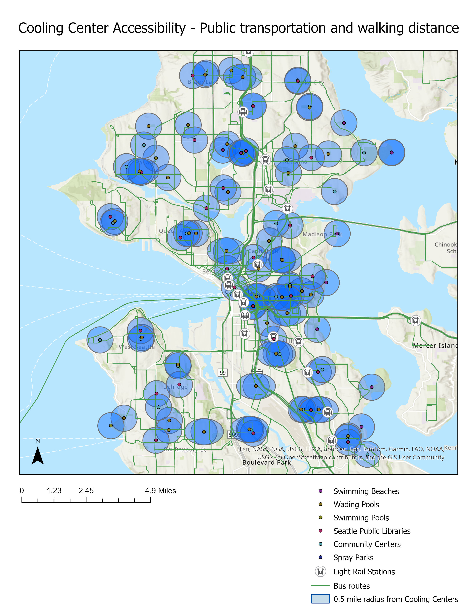

Look up and address to find the closest cooling center to that location.
Each blue dot is a cooling facility.
The red line shows the euclidean (straight-line) distance from your input address to the cooling center closest to it.

This map includes the whole cooling center network. The yellow buffers represent a 10-minute, 0.5 mile walking distance radius to each location. You can also see bus routes and light rail stations.